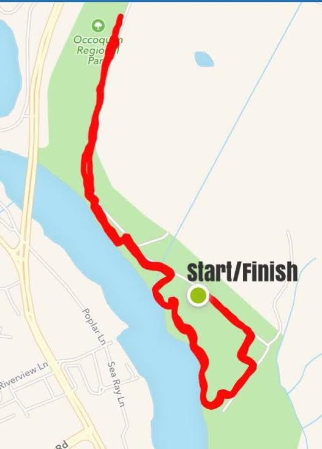

What is Operation Underground Railroad?
Since 2013, Operation Underground Railroad (O.U.R.) has gathered the world's experts in extraction operations and anti-child trafficking efforts to bring an end to child slavery. O.U.R. rescues victims and works with local resources in a comprehensive process involving justice for the perpetrators and recovery and rehabilitation for the survivors. Learn more at ourrescue.org.
When is the race?
The event will be held on Saturday, October 15, 2016 at 9:00 am, at Occoquan Regional Park in Northern Virginia.
What time should I be there on race day?
Runners should arrive between 8:00 and 8:30 am for check in and packet pick up. The 1-Mile Fun Run will begin at 9:00 am and the 5K race will begin at 9:30 am.
Where is the race?
Both races will take place at Occoquan Regional Park (9751 Ox Road, Lorton, VA) and will start in the big field next to the parking lot. The parking lot will be clearly marked, and parking is free.

Are strollers allowed?
Strollers are welcome on the 1 mile but discouraged on the 5k.
What do I get for participating?
All participants will receive a t-shirt, tasty snacks to refuel and the opportunity to participate in family-friendly activities after the run. Prizes will be awarded to the top three male and top three female 5k runners.
Are pets allowed?
Unfortunately we cannot accomodate pets at this event. Please do not bring them.
I’d like to come but I can’t. What should I do?
For abolitionists who want to participate in the liberation efforts but aren’t local, we’re doing a Virtual Run! Sign up to run a 5K on your own any time between October 1st and October 15th, post a picture of yourself running on Instagram or Facebook with the hashtag #ourracetostoptraffick and we’ll mail you a t-shirt, too!
Can I volunteer at this event?
Yes! If you are interested in volunteering on race day, please contact us at racetostoptraffick [at] gmail [dot] com.